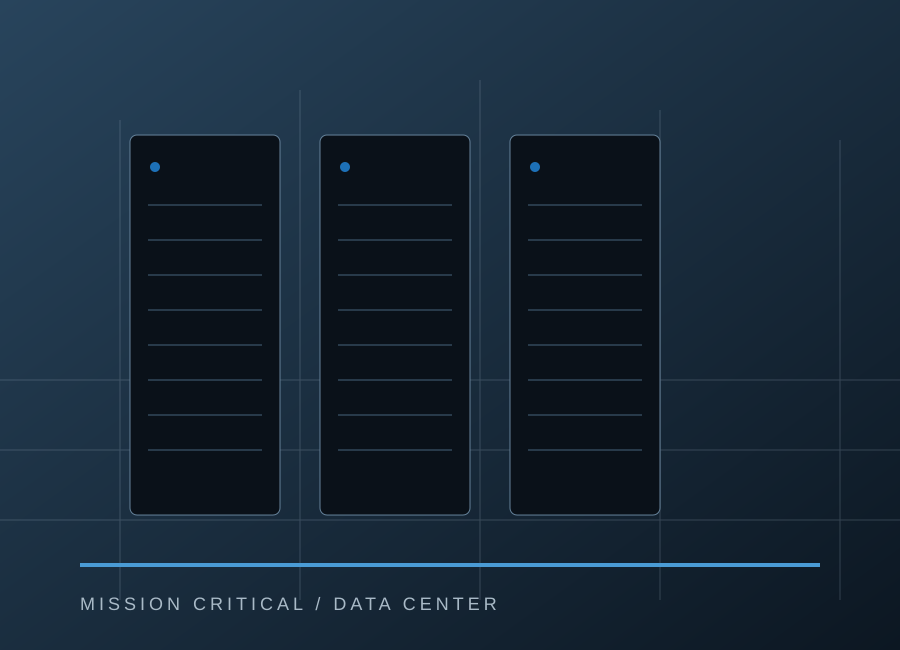
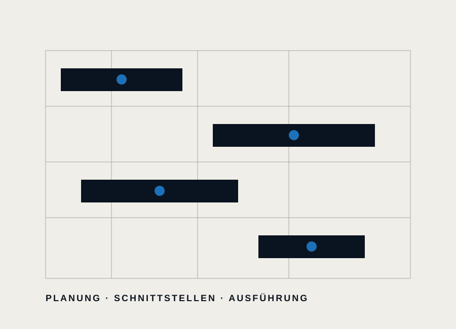

Beispiel – zu bestätigen
Hyperscale Data Center · Rhein-Main
Darstellbare Angaben: Region, Projektjahr, Größenordnung, KONTEC-Rolle, Leistungsumfang, Bauzeit und besondere Projektanforderungen – auch ohne Betreibername.
Diese Vorschau ist nicht öffentlich freigegeben. Bitte Passwort eingeben.
Rechenzentren sind hochverdichtete technische Gebäude. Baukonstruktion und Ausbau müssen präzise in technische, brandschutzbezogene und terminliche Anforderungen eingebunden werden.
Im Data-Center-Bau treffen Bau, Ausbau und technische Gewerke in engem Raum und unter hoher Termindynamik aufeinander. Bauliche Änderungen können unmittelbar auf TGA, Brandschutz und nachgelagerte Gewerke wirken. Deshalb sind kurze Abstimmungswege und konsequente Detailkoordination entscheidend.
Baulich denken. Technisch mitdenken.Claim-Beispiel für die Data-Center-Leistungsseite.
Die folgenden Punkte sind bewusst als möglicher Leistungsumfang formuliert. Sie müssen projektweise von KONTEC bestätigt werden.
Konstruktive Fragestellungen bewerten, Lösungswege vorbereiten und Umsetzbarkeit im Projektkontext mitdenken.
teilweise verifiziertAusbauleistungen als abgestimmter Teil des Bauablaufs – mit Fokus auf Anschlüsse, Details und Schnittstellen.
Beispiel – bestätigenÖffentlich gelistete Trockenbau- und Trennwandgewerke als mögliches Arbeitspaket in Data-Center-Projekten.
Gewerk belegt · Einsatzfeld bestätigenBauliche Arbeitspakete, Schnittstellen und Änderungen strukturiert mit den Projektbeteiligten zusammenführen.
Beispiel – bestätigenGerade im Data-Center-Umfeld können Referenzen anonymisiert aufgebaut werden.

Darstellbare Angaben: Region, Projektjahr, Größenordnung, KONTEC-Rolle, Leistungsumfang, Bauzeit und besondere Projektanforderungen – auch ohne Betreibername.

Darstellbare Angaben: Koordinationsdichte, Schnittstellen, Bauabschnitte und die von KONTEC ausgeführten Pakete.
Für konkrete Rechenzentrumsprojekte kann KONTEC den tatsächlichen Leistungsumfang direkt abstimmen.